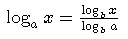
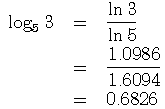
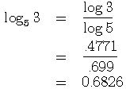
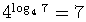
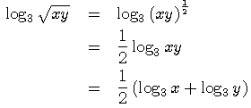
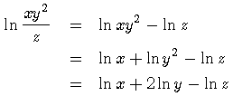
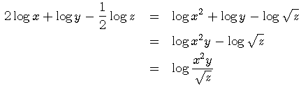
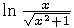

Properties of Logarithms |
Contents: This page corresponds to § 4.3 (p. 341) of the text.
Suggested problems from text:
p. 345 #3, 7, 9, 11, 13, 25, 27, 33, 35, 45, 49, 53, 91
Change of Base
Properties of Logarithms
While most scientific calculators have buttons for only the common logarithm and the natural logarithm, other logarithms may be evaluated with the following change-of-base formula.
Change-of-base Formula

Example 1.
Evaluate log5 3. The change-of-base formula allows us to evaluate this expression using any other logarithm, so we will solve this problem in two ways, using first the natural logarithm, then the common logarithm.
Natural Logarithm:

Common Logarithm:

It follows from logarithmic identity 1 that log2 8 = 3.
(a) Use a calculator and the change-of-base formula with the natural logarithm to verify that log2 8 = 3.
(b) Use a calculator and the change-of-base formula with the common logarithm to verify that log2 8 = 3.
It follows from logarithmic identity 2 that . Verify this by evaluating log4 7, then raising 4 to that power.
| 1. loga (uv) = loga u + loga v | 1. ln (uv) = ln u + ln v |
| 2. loga (u / v) = loga u - loga v | 2. ln (u / v) = ln u - ln v |
| 3. loga un = n loga u | 3. ln un = n ln u |
The properties on the left hold for any base a.
The properties on the right are restatements of the general properties for the natural logarithm.
Many logarithmic expressions may be rewritten, either expanded or condensed, using the three properties above. Expanding is breaking down a complicated expression into simpler components. Condensing is the reverse of this process.
Example 2.
Expanding an expression.

rewrite using exponential notation property 3 property 1
Example 3.
Expanding an expression.

property 2 property 1 property 3
Example 4.
Condensing an expression.

property 3 property 1 property 2
Common Mistakes
(a) Expand the expression . Answer
(b) Condense the expression 3 log x + 2 log y - (1/2) log z. Answer